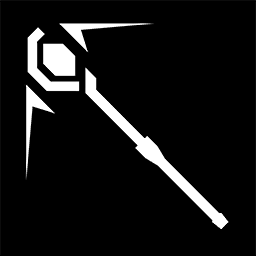

| 职业图标 | 名 称 | 介 绍 | |
|---|---|---|---|

|
近 卫 | 近卫干员通常是最优先安排进入战场的单位，他们负责阻挡靠近的威胁并及时将其清除。 通常他们的素质较为全面，可以较好地应对大部分的敌人。 | |

|
医 疗 | 医疗干员是整个团队的核心，他们帮助在前线遭受攻击的其他干员并治疗其伤势。 医疗干员通常较为脆弱，需要将他们妥善保护。配合重装干员，他们将成为防御阵线不被击溃的保证。 | |
|  | 术 师 | 术师是负责攻击的重要单位，通常他们能熟练控制起源矿石内的效能，以法术形式去精确攻击范围的敌人。 在对付携带特殊装置的敌人时会有更加好的效果。但是一旦自己的位置暴露，处于不利状态也非常容易受伤。 | |

|
狙 击 | 狙击干员是最常见的作战人员，他们负责在有利地形上帮助团队及时消灭靠近的敌方人员。 通常他们拥有更大的攻击范围与破坏能力。狙击干员与术师一样相对较为脆弱，需要小心部署他们。 | |

|
辅 助 | 辅助干员帮助范围内的作战人员强化他们的能力，或削弱敌方单位的能力。 虽然本质上并不具有出色的治疗或攻击效果，但是随着参战的时间越长、人员越多，他们的加入将会引起质变。 | |

|
重 装 | 重装干员是最为坚韧的作战人员，他们负责在作战的最前线完成对敌方单位的阻挡。 优秀的重装干员可以阻挡数个敌方单位。不过要注意的是防御力与生存能力强大是以牺牲对敌伤害为前提的， 因此需要尽快配合其他干员消灭当前的敌人。 | |

|
特 种 | 特种干员是一批以自身独特技巧参与作战的干员。他们彼此之间的能力差距也会比较大， 但是一旦将他们发挥在适当的地方，可能将会有扭转战局的效果。 |
| 势力图标 | 名 称 | 介 绍 | |
|---|---|---|---|

|
罗 德 岛 | 罗德岛对外声称是一家制药公司，但实际上是混合了感染者成员在内，拥有完整独立武装力量与矿石感染研究与检疫手段的一个组织， 是感染者问题的专家。罗德岛的核心建筑是一支移动舰。罗德岛前身为巴别塔，而其本舰由特蕾西娅及其追随者在雷姆必拓发掘， 根据舰上文件而命名。 | |

|
企 鹅 物 流 |
最初作为一家独立的私人信使公司成立，明面上经营着正常的物流运输业务，实际却从事着情报贩卖、武装押运、秘密运输等地下工作。 作为特殊物流公司与情报商人的混合体，企鹅物流在资源运输、情报传递等机要行动起到了巨大作用。 因此即使企鹅物流的许多业务已经游走在各国法律的边缘，各政治势力却对其保有接近默许的态度。 现已成为一家以龙门为业务核心的地下物流组织。 | |

|
龙 门 | 炎国下属的移动城邦，由炎国皇族魏彦吾管控。楼宇林立，交通发达，发展速度超乎寻常，已然成为炎国乃至泰拉经济、 文化的重要中心之一。其发行的货币——龙门币，在经济危机后经济衰退、政权对立的当下，使商业的复兴成为可能。 | |
|  | 莱 茵 生 命 |
莱茵生命实验室是一家位于哥伦比亚，致力于生命科学、化学制造、生物应用等领域技术的公司。过去一段时间内， 莱茵生命一些与源石在生物体上的实验有关的秘密项目扩大招募规模并引起军方资源介入。 | |
| 黑 钢 国 际 |
“黑钢”全名“黑钢国际”，组织总部在哥伦比亚，是一家私人安全顾问公司，同时也是广为人知的安全承包商之一， 其核心业务是提供私人安全顾问与防务承包相关的服务。除去常见的武装力量提供外， 能找到一些线索表明他们曾任命一部分“生化防护相应人员（B.P.R.S）”。 这些人是目前为止少有的矿石与感染者相关专业对策人员。以次延伸出的安保范围囊括了灾后后勤以及工程抢险在内的多个领域。 然而近来收集到的资料有多半暴露出了在这类事情处理上他们已经遭遇的越来越多的困境。 |